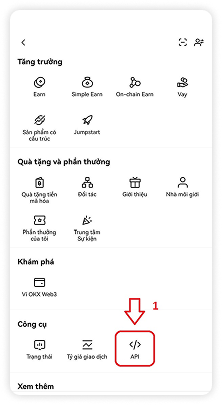
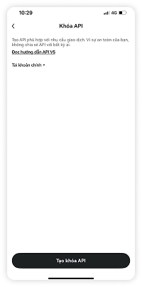
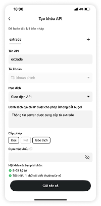
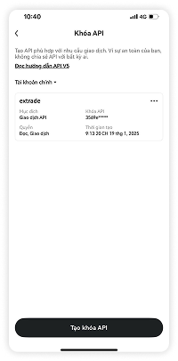
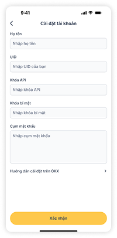

Đăng nhập vào tài khoản OKX của bạn.
Nhấp vào biểu tượng hồ sơ của bạn ở góc trên bên phải màn hình và kéo xuống chọn phần Công Cụ và nhấn vào "</> API".
Chọn “Tạo khóa API”.
Đặt tên cho API của bạn (ví dụ “extrade”).
Để "Mục đích" mặc định là "Giao dịch API".
Nghĩ ra một cụm mật khẩu: nó có thể là bất kỳ cụm từ nào, tuy nhiên hãy tuân thủ các quy tắc do sàn giao dịch đặt ra khi thực hiện.
Hãy ghi nhớ cụm mật khẩu này!
Bạn sẽ cần nó khi kết nối API này với extrade.
Kích hoạt quyền “Đọc” và “Giao dịch”.
Không kích hoạt quyền "Rút tiền".
Bạn sao chép danh sách địa chỉ IP do extrade cung cấp vào “Danh sách địa chỉ IP được phép”.
Hoàn tất xác thực bảo mật 2FA.
Nhấp vào “Xác nhận” để tạo khóa API của bạn.
Sao chép “Khóa API”, “Khóa bí mật” và điền Mật Khẩu của bạn vào màn hình “Cài đặt tài khoản” kèm theo thông tin UUID và Họ và Tên để kết nối API này với extrade.
Bây giờ extrade đã giúp bạn Giao dịch tự động thông minh theo chiến lược đã định sẵn, hạn chế cảm xúc, tiết kiệm thời gian, kiểm soát rủi ro.
Lưu ý: Trước khi bắt đầu giao dịch, hãy chắc chắn rằng bạn luôn luôn để chế độ vị thế của bạn là “Chế độ phòng ngừa rủi ro”.
Vào phần giao dịch, nhấn biểu tượng “…” trên góc phải trên cùng, rồi nhấn vào phần “Cài đặt” rồi chọn “Chế độ vị thế” là “Chế độ phòng ngừa rủi ro”.